หอระฆัง ชั้น 6
ดูบนแผนที่และวิธีไป วางแผนฟาร์ม
ดันเจี้ยนในเมืองหอระฆัง · Lv 99–99
ชั้นล่าง / ดันเจี้ยน
มอนในแมพ (5)
| มอน | Lv | ธาตุ | โซน |
|---|---|---|---|
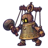 หุ่นระฆัง | 99–99 | ลม | |
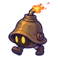 ระฆังจิ๋วระเบิด | 99–99 | ลม | |
| ผู้ตีระฆังกลวง | 99–99 | มืด | |
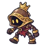 หุ่นระฆังจ่าฝูง | 99–99 | ลม | |
| หุ่นระฆัง · ร่างเงิน | 99–99 | ลม |
อุปกรณ์ที่ดรอปในแมพนี้
| ของ | โอกาสสูงสุด |
|---|---|
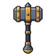 ค้อนยักษ์ไททัน | 0.25% |
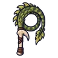 แส้หางแร็พเตอร์ | 0.25% |
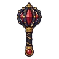 กระบองกรงเหล็กทับทิม | 0.25% |
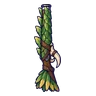 ลูกซองแร็พเตอร์ใบไม้ | 0.25% |
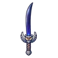 ดาบคู่นกฮูกราตรี | 0.25% |
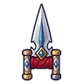 คาทาร์ชิ้นเอกช่างตีเหล็ก | 0.25% |
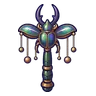 ไม้เชิดหุ่นด้วงแรด | 0.25% |
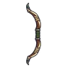 ธนูคอมโพสิตสามชั้น | 0.25% |
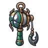 ด้ายเหล็กเขาด้วงแรด | 0.25% |
| ชุดปริซึมแสง | 0.15% |
| ชุดตั๊กแตนตำข้าว | 0.15% |
| ชุดผู้เดินตามลม | 0.15% |
| เกราะกวางเขางาม | 0.15% |
| ชุดเวทเกล็ดหิมะ | 0.15% |
| ชุดนักสำรวจขั้วโลก | 0.15% |